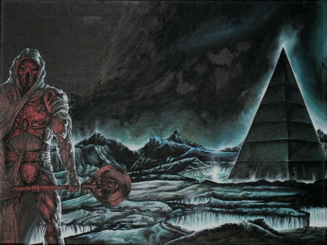

Out (Part 2)
by
Andy Robertson
To Out (Part 1)
Curled up tight now. Hands locked over her breasts. Thighs pressed together, eyes closed, shaking.
"I do love you, Cahaire. And we can't do this."
"No. So you go into the Land and die. That is how it will be." She started shedding furious tears again, clenching her jaw against them. "Where is my honour? Everyone will know."
"Your honour is safe under your heart, where it always is. Safe under my heart, too. No-one will know. I will never tell."
"Where is my honour if I let you be Destroyed? You soft bleeding whipped Fool. You think this shames me, do you? I knew you wouldn't tell about this, whatever I did. You are a coward. And you believe all that rubbish about Eternity and Love. Fool. Fool. Oh please, think. Even if we had lived and met before, what is the chance we could find each other here? Now? Among five hundred Millions? Think, you idiot. I never met you before now. Yes, we have Souls, and they last forever: but they don't conjoin in eternity."
"Why...?"
"Because you are pretty. You look as if you have a nice cock, my darling, if you want to know the real reason why. Because I have to marry someone and you are beautiful, even if you are so stupid. And you are a good person, too. I liked you. I thought I was happy."
"And you don't know about...?"
"No. I lied. Guesses, and nothing else."
"Get up." I wrapped one of the sheets from the tables round her, gently tucked it under her back. She clutched it tight and rocked back and forth. I stroked her head, arranged her hair. "Cahaire: we are lost here, but someone will come soon."
"You are funny. You are oh, such a prude. Old Maris brings lovers in here all the time. I'm surprised we didn't fall over her on the way here."
"Yes. But I don't need to know all the dark secrets of your Guild. Honey. Be wise now, be kind. Do you want to stay here? Or come back?"
"Come back. What else?"
"So sit up. Put your dress on. Comb your hair: it's full of dust. And you are dirty."
"I am not." She turned her back and clasped the sheet to her throat with one hand, picking up her robe with the other, shaking her hair. "Go away. Give me but a minute to get straight and decent."
I turned and went to the door of the stack. Guttering lamps blurred the open book-lined corridor outside. There was no one visible: but I wondered just who might have been listening. I heard her doing things, but I didn't quite turn away. I watched her, from of the corner of my eye. I confess I was a little, just a little, afraid that she might come at my back, with a splinter from the old shelves.
"I am done."
"And you look very proper, respected lady."
"I beg your pardon, now, sir, for calling you Fool."
"Never mind it. You are probably right. But are we friends?"
"There is no choice, now."
"Then it didn't happen. Never speak of it more. Learn from a Fool, for once: this is the knowledge that does not come by words. This is one of those times."
"O, yes. But I — Please attend. I should have confessed to you long ago. I am sorry they beat you, Bann. I apologise. Pardon me. It was only because I was vain and stupid, and desired you to flatter me, that you were hurt."
I set my two hands on her shoulders and looked at her. Her downcast eyes widened in surprise, or fear, then she stood straight and looked right back at me. I kissed her mouth, as long and as softly as she would permit.
She let me for a very little while, then she suddenly shook free, struck my hands off her shoulders, and put hers on mine, crying out as the children do in their games.
"Truth! Truth! Tell me all! Bann! Do you want to go Out? If you were free, not bound by your guild, would you still go?"
"Truth. Yes. I do. I must. How many will ever have this chance? To be Out, even for a short time? There? I think it is the greatest thing any man can imagine: even if I was cut down in the first minute. I am very afraid. But if I was free, yes, I would go."
"You mean this?"
"I hesitated, but now I know. And I have no real choice. What will happen to me if I do what you ask, if they offer and I refuse? You talk to me about Dishonor? I might as well kill myself. In a month, I'd have to flee down to the Dead Cities. I wouldn't die, but I'd be Dead. So I lose you, either way. The truth is, we can do nothing to influence this, one way or another. It is coming, and I must run toward it and fight, not flee away. My only chance is to go Out, and return for you.
"But that is not the real reason. I know now. Truth. I have desired this all my life, of itself. To go Out."
She started to cry again, holding herself back desperately. "Mother Redoubt. You really mean it. All I did was make you sure. Oh, I was wrong to try all this."
"Truth. You were the one who was lying."
"Yes. You have no mercy, do you?" I tried to kiss her again, but she pushed me away, and held me at her left arm's length while she tried to compose herself. "Alright. I understand now. But you should know this, Bann. There is one thing I did not lie about. The spell, those words..."
"Yes?"
"I did find a reference to it. From five hundred years back. It was used by one who returned from the Land, as Scyrr has."
"And?"
"He learned it there. In the Land. So he said."
That was how I first met her. We were children, neighbours: I ignored her, of course, till one day she came up to me with a giggling gang and grabbed my shoulders. "Truth! Truth! Tell me all! Am I the prettiest?" And all ran away before I could answer.
We became enemies because of that. Then friends, as much as boys and girls of that age ever can. And later, time and the matters of our different Families separated us. Years.
And then we met again, I, Bann, and she, Cahaire, both a little old for betrothal, both beginning to wonder if we had missed life's chance. And Bann fell in love. And he thought, poor Fool, that she was his own, his aeon-destined One.
We made our long, slow, way back. The brown and yellow corridors passed slowly, lined with ancient volumes and tottering stacks of cybernetic plaquettes, with a dim lamp every twenty paces. It was utterly quiet, and no one was in sight.
"Listen. It is my turn to explain something."
"No more Truth, please."
"Cahaire, no, it is not that. It is something else."
"What, then?"
"Please. Think back and remember. When you were a child . . ."
"Yes?"
"When you were very young, when you were little, did you ever wonder if the world was real?"
"What? Real? What do you mean?"
"A coloured show. An illusion. Subjective only. Other people just moving shapes, not alive or conscious. All pretence, the Redoubt, the Land. And yourself, your real Soul, away somewhere else, in some niche of existence, dreaming it all, making it all up, the only real thing in a world of shades."
"Yes." She paced softly for a while, caught off guard. "Yes. How strange: you felt that too?"
"I did."
"Yes. And when I was a little girl. At night. I did. I wondered what was real. My dreams, or the day-time world. They seemed equal, and how could I tell? But I never knew other people felt that way, like me."
We walked for a while more: the old forgotten stories passed us in their ranked millions, and we were as dim and quiet, as silent and sad, as two ghosts.
"So. Are you there, Cahaire?"
"What?"
"Are you there? This is a world of shadows. A Night Land. Are you real? Tell me!"
"Yes! I am not a shadow!"
"Are you real? Like me?"
"Yes. Oh, I understand what you mean, Bann! But I am real. And I know you are real."
"I'm here." I touched my temple with one knuckle. "I'm here. I hurt you so much, don't I? Again and again. But it is because I am real. If I was only your dream, I could never give you pain. So are you there?" I touched the side of her face, and she slowed and turned to look squarely at me, in the shadowy spaces of the old Library corridors. "You hurt me, terribly, too. So are you there? And as real as me? A whole universe? A Redoubt? A Land? All in there?" I stroked the side of her face.
"Yes."
"So. There are two real things, at least."
"Yes."
"Two realities."
"Yes." Timidly, her soft hand touched my face. "Did I hurt you, Bann?"
"And where does reality come from, the other things that are not us?"
"Is this going to be another philosophical lecture?" Her hand fell. "Spare me that. You were saying such strange good sense a moment ago. Stop this or I will weep again, I cannot endure it any more."
"Cahaire. I love you, I love you. Please. It is just this, no more. There are two things that are real. Other things are not real, perhaps, or not as real. But if the two joined? Really joined? Really, truly, became one? What then?
"Our Souls endure for eternity. We know. But where, Cahaire? In what reality?"
In the Redoubt, strange rumors. I heard details of political fights and manoeuvring, things that normally passed over my head. Alliances were forming and dispersing, and Scyrr would be seen or spoken of time and again, talking with this or that group of the Civitas. With the other Captains of the Watch, of course: but also with the Scholars, with the Magistrates, even with a group of Monstruwacans. I saw him civilly a few times: utterly at his ease, magnificent, and the center of every gathering, even of those who far outranked him: and he never failed to acknowledge me with a look or word, and never granted me more than that, nor did I expect it.
There were stories about disturbances in the Land, and about men preparing to go Out: but these latter are never confirmed or denied publicly. Whispers about me, perhaps, being among them, had somehow spread as well, to which I turned a metal face. My family knew, but they were close-mouthed enough: I can not say how the knowledge spread. Not by me, and most certainly not by Cahaire. My second duty at the Rim approached, as the time of the next Patrol neared. Scyrr told me nothing, absolutely nothing, about ultimately going Out: and I asked nothing. But I knew, I felt, that his plans were becoming more and more certain.
I expected the hard word from Cahaire. The return of my gifts, the polite refusal, the ending of our betrothal. If she had had the least sense, she would have left me long ago, I knew, and obviously if was surely and publicly known I would be going Out, she would have to. But it did not happen yet. After all the conflict, a kindness seemed to fall between us, and we were merciful to each other. In the days left before my next expedition to the Rim, she permitted me to walk her along the Concourse thrice. There were no more arguments. There seemed no cause. She held close to my side, and we talked easily, like old friends, not lovers.
In the darkening chamber, we readied ourselves. The pumps cycled and flushed, our ears popped, the lights dwindled to the merest red and ulfire flicker, as we acclimatised. The first eyeball sight of the Land is always a shock, a raw thing breaking in upon you. Some of the Sensitive literally cannot bear it, as they cannot bear even to glance at a Watcher. For us, shielded by our helms and chosen because our minds were almost dumb and deaf to any such call, it was only like the glaring face of an enemy.
With a tearing shriek of air, finally equalising pressures, the Petty Door opened. We filed towards it, and as we moved to pass, Scyrr rested his helm against mine, for an instant.
"Only to the Rim this time. But we go Out, soon."
I knew there had been disturbances: but the changes shocked me when I saw them close. A fourteen-night ago all had been silence. Now, a swarm of dwarvish things scurried round the edge of the northeast quadrant. Each carried a writhing devil-fire over its head, a single lure or signal that pulsed jale and green. From time to time one would bound high and flash out a great dart: in response to this cry or signal, waves of light swept across the swarm and returned. I watched these waves infocus to a spot where the beasts circled, driven to frenzy, digging. They pulled up something like a branched black root that writhed and spat acid, futilely, as it was devoured. They left its remains and flooded toward us: and Scyrr watched impassively, not moving, as the blind snouts butted and darted towards him, not three feet away behind the humming field. But not one of them touched the Wall, and after a time they all swept to the north, running at thrice a man's best pace.
The whole Land was alive, awake. My previous patrol seemed inconsequential: the sights that had so awed me were nothing now but casual debris. Everywhere we looked, now, things crept or ran, some walking like men, others bounding like beasts or scuttling like insects. The bushes moved with the violence of the struggles within them: below our sight, among the roots, fierce wars. And further from the Circle than we could easily see, eyes glinted and talons flashed, hulking shapes manoeuvered, or crashed together and ripped apart.
"What has aroused them?"
"It is a demonstration of power."
By whom? I would have asked. But I knew.
We strode round the circuit of Light, a three-hour walk past cold, mutating hells. They were there, waiting. The three grey shapes again, somehow unmoved, unthreatened, though they were toys compared to the things that warred and fought in the endless dark spaces behind them. I wondered if they had been standing, untiring, since our last patrol.
Scyrr faced them. We five ranged ourselves behind him. Then began the strangest thing I have seen in my life: for he gazed at the central one and did not move. And nor did they move, though horrors raged and trumphed around them, fang, sting, claw and spine, shock and spew of poison, flash of organic electricity, and the dim scream of stunning ultrasound that the Wall could only partly dull.
They did not move. They merely gazed back, untouched, while the demons of the Land danced attendance.
What did Scyrr see? What did he think?
My own eyes were caught and held. I could not move or blink. Scarcely could I breathe. If they had commanded me to come forward and breast the Air Clog and join them, I would have been lost. Yet their eyes told me nothing I could remember or interpret later.
What did Scyrr see there?
At last, the timeless time was ended by a great sound. The Home-call, issuing from the Tower, tearing through every spell. I awoke.
Behind the three ashen shapes, the nightmares were streaming, fleeing in one direction only, around the Circle. They fled from a looming darkness that jolted northward, multi-legged, multi-jawed, making the Land ring like a drum with each limb it let fall. A thing too vast to seize in one glance, sweeping clean a furlongs-wide swathe with a swarm of branched darting secondary manipulators, scarcely seen, far above the mists and fires, yet turning the wide Land into a pillared hall ceilinged by its belly. Dwarfed by nothing at all, save the Watchers and the Redoubt Herself.
Its course was set to intersect the Circle just where we stood: and it came on relentlessly until its first outlying tendrils touched and crisped against the force field. Then it stopped. Low and high, and higher than belief, the plated whips probed, flashing into ruin at every spot, as the Wall flared into a sheet of lightning with each touch: and Inside the Circle, Inside, actual matter, actual debris, fell hissing and stinking.
We stood. After nearly an hour it turned clumsily away, and skirted round the Circle, continuing its long harvest northward.
The Three were untouched, unmoved. Whip and palp came not near them.
Power indeed.
We stumbled back. We did not complete the patrol. Obeying the Home-call, we fled.
And the strangest sight of all, seen when we unhelmed, was Scyrr's face, and his tears.
Off duty at last, exhausted after half a day of debriefing and reports and consternation, I fled further, to the Library. Everywhere on the way there was disturbance, within the Redoubt as without: I saw crowds, groups talking, panic and fear in some places. The news was not in the hour-sheets, but spread by word of mouth. An undercurrent of horror at that Titan in the Land. And more particular, more single, floating above it, a second rumour: that men would indeed soon be going Out. And this rumour was one I could have confirmed, for the formal announcement could only be hours away.
The place was frantically busy, but the older lady at the desk recognised me and gave me a sly smile I did not like, one which vanished at once when I showed her official tokens and demanded a Scholar, the journeywoman Cahaire, and presently. This cheat would have cost me far more than a flogging if it had ever been discovered, but I had no care for that now. She appeared, with her hair bound up and her feet muffled in slippers. I took her arm, ignoring the Senior's curious face, and hurried her away.
"The Watch require your advice, respected Scholar."
"Where are you taking me?"
"Let us just walk. No one will notice us. No, not to the Stacks."
Among the crowds in the streets was privacy. Everyone was talking, no one was listening. We walked fast, avoiding others. Really, I had had no business to approach her like this, but she was obviously the only person who would understand anything or have anything useful to say.
"Cahaire, help me. What was that thing?"
"Have you recorded what you saw, Bann? In detail? People will read what you wrote an hundred thousand years from now."
"Far too much detail, thank you. And I may see more detail in future. But what was it?"
"One of the Unique forms, we think. The term does not mean much. They are all different. Not a clade. Non-reproducing, immortal, self-modifying, bootstrapping. It might have been neo-human once."
"How can it move when it is that big? Why is not it like a Watcher?"
"I suppose it uses something much stronger than bone and does not have a conventional circulatory system. The Master Scholars do not know, believe me. They are terrified. The Monitors pulled all the public records for that time segment, but I have traced bootlegs spreading in private use. Its back reached Dead City Fifty."
"Trace all the bootlegs and null them. There is too much panic around already."
"Do not instruct me in the duties of my Guild, sir."
"Your pardon."
"Could it have gotten through the Wall? Surely it tried and failed?"
"It was not trying. Just tapping gently on our door. I stood under it. But it doesn't count, Cahaire, what matters are the Ones who control it."
"It's confirmed, isn't it? Men are going Out?"
"Yes."
"What is Scyrr going to do?"
"To seek alliance, make negotiations, maybe." Or something that might have that meaning, in another world of meaning than we know.
"That is Heresy. Could the Civitas truly have sanctioned that?"
"I did not say it."
"No. But it sounds probable enough. Will they take you, Bann?"
"The chance of my going Out should be two hundred in thirteen hundred and twenty. Chosen by lot. It should be. But Scyrr leads in this. And Scyrr will make the call. And Scyrr picked me in the first place."
She stood very straight, looking at me. "So we have only a little time."
"Yes."
Now the blood thudded in my ears, and my throat was stopped up and aching. Speak, end it.
"Respected lady Cahaire. I release you from our betrothal."
"Do you? Well then, I am free. Now understand me, and listen, for once. For now I am free, and I am going to do what I want."
I have not been here often. No one gives the Magistrates much honor, despite their legal powers. Any man who gets into a serious conflict is either a discourteous fool, or is allowing himself to be afflicted by one. Any man who cannot settle that conflict without recourse to the law is a coward. Fight, or if you are not well-matched, take Chance. What need for laws?
Except for this, I suppose.
Here she waits. Her feet bare, and the last handsbreadth of her dress smirched and dirtied, in memory of the lost, lower, Dead Cities. The last handsbreadth of her wedding dress, which bells widely, which is perfectly white, which narrows to her throat and face, her own Tower of Observation. And she is the very type and pattern of the Redoubt, shaped of womanhood. No butterflies to attend her, no jewels except a single round of heartwood at her throat. White-haired, black-eyed. A perfect virgin.
"How brave of her." The whispers.
And her family, here too: a sullen crowd. The women look poison at me. Her father gives me the measured stare of a real enemy. Any one of the younger men would call me to Fight at the least excuse, and I respect them all for it. I am going to marry her and leave her a widow in a month or less, and for all the talk about Honor, for all the fears that rive the Pyramid, they hate me, as they ought to. Good.
I never dreamed she would do it. How she must have fought them for this.
A Hasty Licence, one of many granted recently you may be sure. The under-Captain presiding, a guard of brothers-in-arms, an arch of spinning Diskoi to walk down, death and flame just above us, Cahaire as straight as a stringer beside me, yet flinching just a little, something I felt in her arm that held mine, that no one else could see.
Speeches at the feast, troubled, dishonest. Yet also, heartfelt good wishes, blessings, gifts from old friends. A hundred proper details skipped with criminal ruthlessness, but a hundred gifts of love and time to fill the gaps. Thank you, my father, my sisters, my cousins, my friends, dear Folk.
We processed to my Home: and it was as if we were two parties setting ourselves up for War, my friends and family against hers, and the only ones truly at peace being us two. Theoretical fellowship, theoretical joy. And even I hardly knew if she was a lover or only an enemy crippled by pity for me.
A strange, confused wedding.
But afterwards, at last, alone. The candles of the bees were lit. True, chemical flame, the only time and the only place within the Redoubt that it is ever permitted. She unveiled and stripped, and she was silent. In the mist of that ancient, golden light, she might have been a complete stranger, a dream of flesh, a dream, returned from the Days she denied.
The real Cahaire was within that stranger. But it was only after I had known her and held her for a long time that we met.
Morning, and a call sounding. A messenger, at a time when no man should expect a messenger. She slept. I went and opened the door. It was a Watchman, in nightsuit, visor down, armed with a live Diskos. For an instant I thought he was going to kill me, but he handed me two packets, and left, impassive.

The first package was orders. I ripped it open, and saw a single character. The set-speech rune HAGALAZ. Which means: constraint; denial; negation; stasis. The traditional sign of refusal-of-service.
And in the second package. Heavy, jagged, uneven, black, rough. A stone from the Land.
"You're not going." She was still weeping and embracing me, and clutching the rune to her breast. "Honey. Love. Husband. I was sure. I thought they would take you."
"No. And they sent me this."
I gave her the stone. She took it and threw it with a scream — "Aahhhh!" — hard against the wall, and turned again to me, burying her head against my neck, kissing as if she would never stop, gasping, trembling. I rocked her and stroked her and after a while she quieted.
Our tears and our kisses mingled. I had nothing to say.
Later. Still resting. The Lamps were bright, the day was abroad, but we were not.
"Why?"
"I don't know. Maybe Scyrr has mercy."
"Why is he going Out?"
"To seek Reality." I rolled over and took her head in my hands, looking down at her. She smiled. I kissed the dear Redoubt between my palms, and She kissed me back, all love. "To look for what is even more Real to him than this. I think. There is the strategy and the safety of the Redoubt, there are the great public things, but that is the core, the drive within him. The Reality he has chosen. The agon. The test. Out, in the Land. He wanted it. To return there, and be Real again. That is why he has made this happen. I am sure."
"Could it be..."
"What?"
"That he understands this? That you are not just running away, but...I don't know how to say it."
"That I am seeking reality, as he is?"
"Yes. Perhaps he saw that in you."
"I can't easily imagine how. But I would put nothing, nothing, beyond him. And if he understood, he would aid me for the sake of the thing itself, far more than for weak mercy. He is a great man."
Her face turned bitter. "You want to go Out, don't you? Still? You want to fight, to be Out there, under his command? Don't lie."
"I did. Yes. I confess. But I speak only in the memory of that desire. No more. On my honor and my oath, now all my heart chooses you."
"Look at your hands and your arms. They are shaping to hold the Diskos, not to touch me." It was true. "If you had a chance, if he commanded, you'd get out of this bed, now, and go."
"Never. No. This is better, a greater thing."
"You would have thrown me away and gone Out. And even after you told me that, I fought, I wept and begged them. For just one month with you, all I hoped for. And you still long to go."
"Forgive me. I love you, and I repent."
She stared hard, tears coming, then closed her eyes and kissed me. After a while, she relaxed.
Sweat drying, hearts slowing.
"I love you. It's Real. Yes."
"I love you"
"I do. But, it's..."
"What?"
"It's lovely." She kissed me again, very deeply. "Touch me everywhere. Inside, too. But it's not...I still don't understand. "
"What?"
"Almost, what you said makes sense. Almost. But it's not making a new universe."
"What is most like that making, then?"
"Oh, it is when you talk to me." She snuggled close, and consented, tolerant, drowsy, as I disposed her very carefully and delicately, tangling our legs together, embracing her body, wrapping her arms round my neck, so we pressed together from forehead to instep. Using my right hand to draw her hips against me and my left to hold her body. Stroking her for a little while, then pulling her closer, and then caressing her again.
She was drifting into sleep. "Or like that. Yes. When you hold me. I'm here."
"I'm here. Not far away."
"Forever, Bann?"
"Perhaps."
"But it can't be true. It's a myth. It's beautiful, but it's just a story."
"Why not?"
"How could it be true?" She stretched, wakeful again now, and sat up. "That a man remembered his ancient Love, from the Days of Light: And heard her, reborn, somewhere in the Night Land. And went Out, alone, to rescue her. And bought her back?"
"Why not?"
"You've been to the Rim. How could one man survive Out there alone, even for half an hour?"
"The Land is more terrible with every chiliad that passes. Maybe it was easier in those days."
"And where was this place?"
"Another Redoubt, that fell."
"Nonsense. No. And we never met before. Never."
"There has to be a first meeting. Even in Eternity. Perhaps this is it."
"No. No. No. I love you: I know this means all to you. You think love can be forever, and that those Lovers showed the way for us all. But it's so absurd. It's a dream. We can trace that story back and back and back, but it's just a story. A man's dream of woman, and love. Be realistic."
"It seems real to me."
"No. The Days of Light are a dream. If we came from anywhere, we arose from the Land, and built the Redoubt as a refuge."
"Then how did we survive, before we had the Redoubt?"
"Perhaps it was easier. Or perhaps we became weaker afterwards, living here."
"If that's true, we became more loving. Not weaker. Love is better than strength, and stronger."
"That is true at least, darling idiot."
"In any case, I Believe. More than ever. Truly, completely, now. Utterly. And it was you who taught me, and made me sure."
"Well, it is hopeless. It is hopeless. I give in. You win."
"That is most unlike you, Cahaire darling."
"Yes indeed. And for why? Only because I desire that we should stop talking nonsense, and have some breakfast."
"When do they go Out?"
"Soon. And then I must leave the Watch, Cahaire. That stone was my dismissal. Not officially, but that is what it means."
"Yes." She hugged me again, then turned and went back to coiling her hair. "We will be poor. Never mind."
"Not so poor. And it doesn't matter."
"And there will be explanations to make. My father only permitted this because you were going Out, and he would have been shamed to refuse. Now he will be livid. Do not Fight, please."
"I promise. Whatever he does. I shall earn his forgiveness by pleasing his daughter."
"Be sure you do, then." She preened, looking at herself in the mirror. "Now don't I look nice, with my hair up like a married woman? In a few months it will all be past and forgotten, when he sees me happy."
"We may all be dead by then."
"I think we will live. And whatever happens, I have done with fearing. I am going to fear nothing at all."
"No. I am not afraid."
Now Scyrr is gone into the Land, with his two Hundreds. All is quiet. I doubt they may return.
I thought I had nothing. I thought I had a month. I have forty-three years, perhaps. Or Eternity, perhaps. But we rarely talk of that any more. We address these matters often and often, in detail, but when we do what passes between us is not mere talk. Not mere words. Oh, my preaching to you, love! But at last I learn. I will live it now, not talk about it.
And the little practical problems that surround me. Life. I touched on great things. I might have been a Hero. But I am just a man, and I can't live my life by might-have-beens. I am happier than I believed possible.
The lowest, sealed, dead, Cities buzz with industry. Current cannon, culverins and sakers, ancient weapons being researched and rebuilt. Vital work for the Scholars: and the joy of working at it, beside her. And the Matrosses welcome recruits and Guildless men: especially one who has been to the Rim.
One claims that weapons were made that would break mountains. Another traces their scars, Out in the Land. We will never despair or be downcast: there shall be another, stronger, Circle, and if that Titan comes once more, we shall slay it. Fear us.
Fear us. Do not touch, do not harm, my beloved, my Redoubt.
For you in the Land, starveling things, our love may seem the coupling of worms, trapped under some iron tetter. But it is not. It is the meeting of gods. The gaze of her eye has more power than the gaze of the Watchers; the reaching of her arm could brush aside any Leviathan; her voice holds more potency than the Laughter from the East; and her goodness and beauty can swallow all your horror and all your strength and make it nothing. And it will.
Fear her, for she is greater than you. Fear me, because I love her.
I am a Fool, yes, a very great Fool, but I know this is real. I touch it every day. It is not given to us, but built between us, made by us, with every loving action, by all of us, alive here in the midst of your Night Land. And when you are less than memories, it will still endure, Love, resting in Eternity, not in time.
We never met before, in the Days of Light. Our Eternity begins now.
© 2002 by Andy Robinson.
Image © by Martin Isitt.